ruler of all divine evils
"The soul is richest when it's desperate."
A demon among the world of the living ... well, among them only when he's craving his favourite food: souls. With a smooth tongue and charming persona, it's not hard for him to lure in unsuspecting humans with a thirst for something more, for an answer or resolution that he can happily provide ... at a price, of course.
He spends his spare time managing the other demons; with his power, he ranks higher than most and many respect him almost to a fault. Some call him a king, along with many other ostentatious titles, but he shrugs them off as he feels no true desire for them — their purpose is merely to survive by the end of it, not to rise up and overtake their food resource.
( Though he'd be lying if he said he didn't enjoy watching humans undermine themselves. )
To those willing to deal with the devil (or just talk to him), he makes a wonderful conversation partner; millenniums of living have given him a vast depth of knowledge and experience to discuss, though one still has to tread carefully with him.
ruler of all divine evils
"The soul is richest when it's desperate."
A demon among the world of the living ... well, among them only when he's craving his favourite food: souls. With a smooth tongue and charming persona, it's not hard for him to lure in unsuspecting humans with a thirst for something more, for an answer or resolution that he can happily provide ... at a price, of course.
He spends his spare time managing the other demons; with his power, he ranks higher than most and many respect him almost to a fault. Some call him a king, along with many other ostentatious titles, but he shrugs them off as he feels no true desire for them — their purpose is merely to survive by the end of it, not to rise up and overtake their food resource.
( Though he'd be lying if he said he didn't enjoy watching humans undermine themselves. )
To those willing to deal with the devil (or just talk to him), he makes a wonderful conversation partner; millenniums of living have given him a vast depth of knowledge and experience to discuss, though one still has to tread carefully with him.
Character
Likes
- luxurious, gaudy items
- breaking people
- red meats, complex meals
- organization
- watching conflict
Dislikes
- weak willed people
- other gods / those above
- boring outcomes
- art and poetry
- uncontrolled temper tantrums
Story
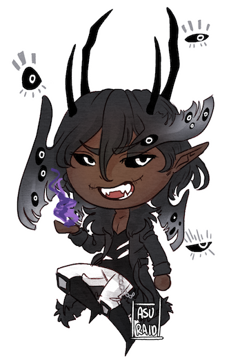Summary
The deep, pale depths of this kingdom only knew my heels, and no others that weren't my cloned army.
I built this place to suit me, and only me. I see countless painted murals, all showing a different version of me. My eyes, my darkness, and my elegance. My purity in the shadows. I walk across halls that only have my wonderful and flawless face across it all. My strength won me the throne of all the Hells.
I smile as I see my throne, and breathe in the room deeply as I push further in, alarming the living throne, that I would soon be sitting on it. The throne itself is very alive—adorably waiting for me—because there's not much it can do, but sit there. Of course, anyone else who isn't me, will die upon sitting on the thing. I remember testing it, putting a poor pathetic demonic on it who was all too busy stammering its pleas, and then pop! It was splattered everywhere on the floor, on the walls, on me, yet the throne was as clean as if it didn't happen!
I tried with another demon, and another pop. Slower this time. The screaming of agony upon the realization, and the incapability to move from said throne, made me laugh. Watching them choke as the blood from their throat started to rise and spill out, and they slowly cracked and split too. Cruel. But as fun as that was, I decided to stop doing so; it was oh so very messy, and I don't have time to enjoy such slow torture all the time.
Someone needs to grow this hell, so I take my seat, and see the extreme pale lady residing from within. She looks at where I entered from, glaring for a moment, then not staying anymore. She was the one who I bent to my will, regardless of how she felt about me. I broke into her, and now I owned her. She disliked me, but I don't think she ever liked anyone, and that doesn't matter to me.
Things were clean now, the bounds of hell no longer a fight for one to survive. It's a fight to win favors from me, otherwise you'll die in a delightfully painfully manner, which I often choose. People screamed, begged for mercy where there was none. For their hunger to survive was strong, but they were stupid and eager little pigs that didn't understand the greater point of it being my Hell. And only my Hell.
You bow, obey, and listen. — RuinedCrown
Additional Blurb
You could call him many names, King of Demons, Ruler of the divine Evils. All of them to be true, but to be called one title is flat out boring. His joy to play with human life in itself, that alone the definition of demons to a human minded fellow. He doesn't care, however. It's simple, people can call him whatever they want, but he knows the truth of himself and the other demons that fear him with respect.
To put simply who this man is, the one who rules over your simple nightmares, life ends with him in a situation of humans if he's involved. His smile is like that of snakes locking onto a simple mouse before it strikes at the neck, choking it and stealing its last breath for pleasure. His words the viper's venom. But sometimes... the price was worth it, for what they wanted. Since a demon won't lie to you, but also won't tell you the truth of what you signed up for.
A mastermind of despair, someone who wants the equal value of his work, of course. What demon do you know works for free?
But what if they try to flee without payment? Become rats or be content?
Eyes float around him, laughing and mocking the victim after they got what they wanted, and didn't want to pay the price. He laughs at them, gives them time to see if they can flee. But of course, they can't. It was hilarious to see many tries, however.
But what can create something so dark, so unruly?
It's very simple. Human desire is as dark and hateful as it is bright and lovely. You can't live truly without either. You have desires, your neighbor has desires. You have hate, as does someone else. Human desires birthed this dark soul, and human desires bring forth as the years go by. He knows he was born from a devil's egg in an unexpecting village that homed a murderer, whose soul so dark... gave birth to a demon that destroyed the whole village overnight.
A feast just for one.
It was, delicious, one by one, another meal, another after another! How could he dare forget that feeling? It was so filling, but now the feeling sometimes become bland, and he's very picky about who he chooses to "help" now. The soul is richest when it's desperate.
But whose that desperate to call the King himself? Only he knows that's the answer, and he can't wait to see the next rat that becomes his victim. He's waiting, knowing, they will show up one day... and he will be as devilish ready as he could be. — RuinedCrown
Origins
A demon amongst demons ... demons are often born of tainted and corrupt souls, but few are just born, made of raw and pure darkness and void. Nameless is one of those very few, a demon in all his fullness. But even he needed to start from the very bottom, scraping what morsel of souls he could get his hands on.
But with time comes practice, and with practice things get easier. His tongue got smoother and sharper, his patience slowly lengthened to where he would be happy to patiently wait ten, twenty, if not a hundred years of a meal if need be. Soon, even longer.
In the realm back then, it was a dog eat dog world, everyone fended for themselves and 'alliances' were forged wearily; your allegiance was often to yourself, even if you said differently. Survival was a goal, yes ... but some had their sights set much higher, to the throne governing the entirety of the demon realm.
... he wished he had a grandiose tale on how he came to take it, but by the end, it felt like child's play to merely sit on the throne and have it take to his whims.
- Born from the FE world, caused by a mass murderer in a village.
- Born from the malice of the killer, feasted upon the leftovers of everyone there.
- Found by his future mentor and taken under her wing.
- Ascended to the throne by basically killing the previous king and taking over the throne of hell. He says the way hell was previously ruled over sucked shit (Ahaur and Yadyra may have had a hand in this).
Abilities
His primary power lies in shadow and spatial manipulation which makes travelling easier for him around the area; transitioning between the world of demons and humans to him is the equivalent of an easy flick of the hand. His raw physical strength is well above the average human and most other species within the world, having the ability to tear and unearth trees if he so wished to.
He also has the ability to shapeshift and take on any form he so wishes; the current one is one he created for himself to keep as an appearance, but in reality demons are forever shifting in what they look like, with no true form of their own besides what they choose to look like. He's always found the elder and younger appearances to be the easiest to use if needing to scout or interact with humans.
Moodboard
Design
Design Notes
- He has multiple pupils within his eye, though they are optional to draw.
- He has 'stitches' at the corner of his mouth, also optional.
- The eyes floating around him are also optional.
- His hair wings move around actively, so they don't need to be drawn in the same position as any other drawings.


 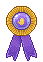
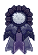
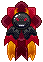
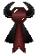
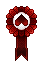
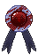
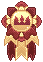
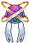
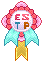
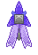
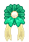
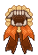
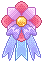
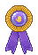
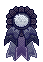
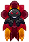
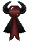
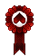
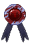
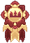
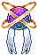
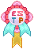
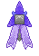
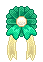
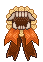
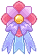


 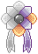
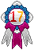
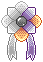
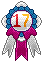

{kind=link}
{kind=link}
{kind=link}
{kind=link}